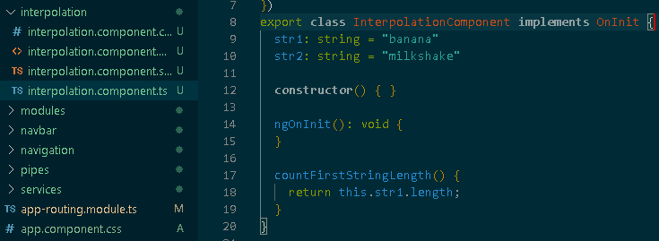
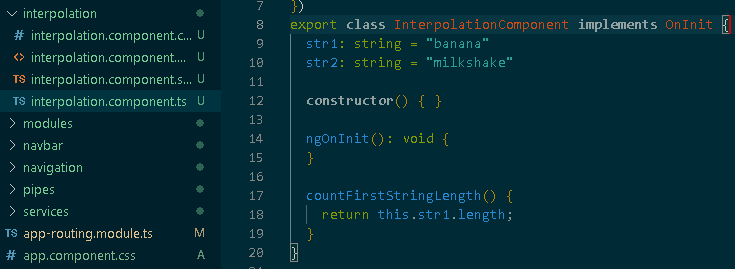

Interpolation is a special type of syntax that allows you to include expressions, function calls and attributes in your template HTML. In order to include a model value in our template, we simply surround the attribute/function/calculation with the {{}} delimeter.
The best way to understand interpolation is with an example.
In our typescript model we have two string attributes and a function. Using interpolation we can display these attribute values and the function return value in our template.
Example:
 
The first string attribute is: {{str1}}

The first string attribute is: {{str1}}
The second string attribute is: {{str2}}
You can do simple calculations or even concatenation through interpolation.
The two strings concatenated with a space between makes: {{str1 + " " + str2}}
You can even call functions with interpolation, the returned value is displayed.
The length of the first string attribute is: {{countFirstStringLength()}}
There are some things you can't do with interpolation such as:
- boolean logic (and, or, not)
- assignments, or changes to attributes (=, ++, +=)
- multiple expressions in one interpolation